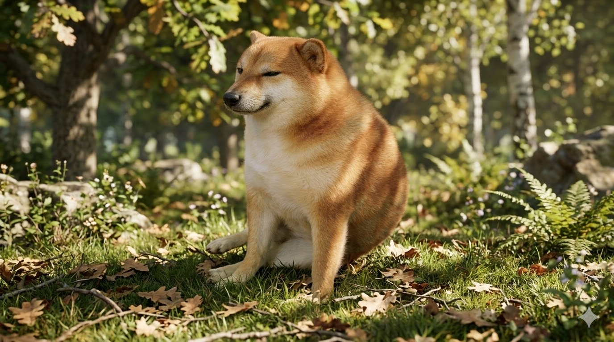
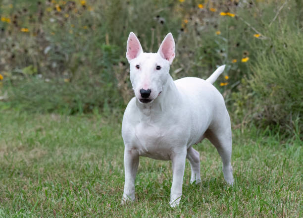

คาบุ (Kabu)
| พันธุ์ | ชิบะอินุ |
| สี | น้ำตาลทอง-ขาว |
| อายุ | ประมาณ 3 ปี |
| เพศ | ผู้ |
นิสัยสงบ สุขุม ชอบมองกล้อง เข้ากับคนง่าย
มิลค์ (Milk)
| พันธุ์ | คอร์กี้ |
| สี | ส้ม-ขาว |
| อายุ | ประมาณ 2 ปี |
| เพศ | เมีย |
ร่าเริงสดใส ยิ้มเก่ง ขี้เล่น ชอบอยู่ใกล้คน

ปุ้ย (Pui)
| พันธุ์ | ชิบะอินุ |
| สี | น้ำตาลทอง-ขาว |
| อายุ | ประมาณ 5 ปี |
| เพศ | ผู้ |
ชิลล์มาก ชอบนั่งเฉยๆ นิ่งสงบ ไม่ค่อยเห่า

วอลเตอร์ (Walter)
| พันธุ์ | บูลเทอร์เรีย |
| สี | ขาว |
| อายุ | ประมาณ 4 ปี |
| เพศ | ผู้ |
ซื่อสัตย์ กล้าหาญ พลังเยอะ ชอบออกกำลังกาย